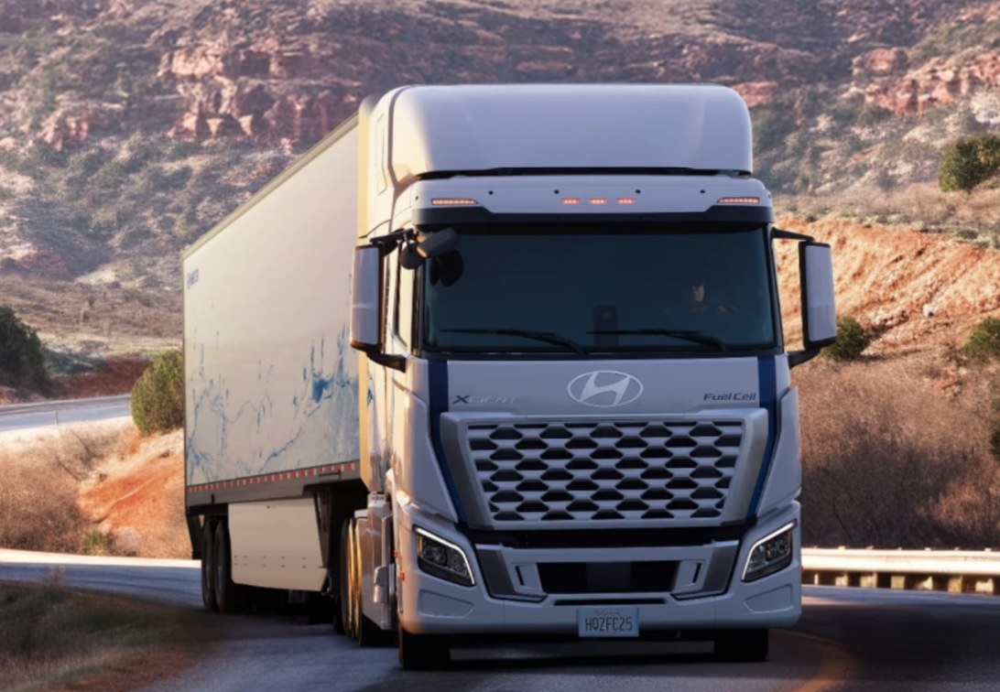
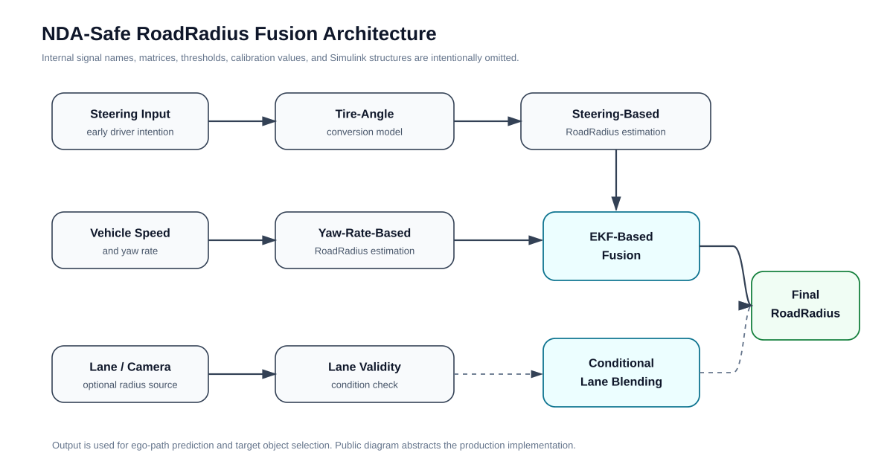
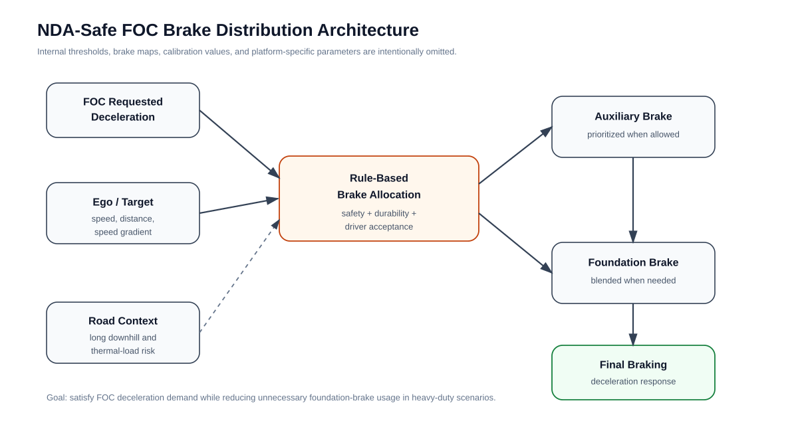
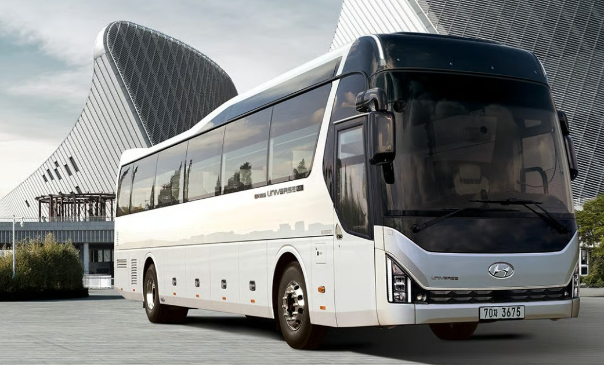

Mass-Production Commercial-Vehicle ADAS / SCC / RoadRadius / Brake Distribution / Target Selection
HMC Commercial Vehicle SCC / Lvl2 ADAS
I worked in the SCC part of Hyundai Motor Company's commercial-vehicle SCC/LFA development organization, contributing to mass-production SCC tuning, FOC tuning, regulation-driven state-transition updates, vehicle validation, and production issue response. My independent technical ownership focused on SCC2 Emergency Stop logic, EKF-based RoadRadius fusion, FOC brake-distribution logic, and target object selection robustness for heavy-duty commercial-vehicle ADAS.
Back to resume
Role Clarification
I was assigned to the SCC part within the commercial-vehicle SCC/LFA organization. The page separates team-level SCC production contribution from the areas where I had independent technical ownership.
- Team contribution: SCC tuning, FOC tuning, vehicle-specific calibration, regulation-driven SCC state-transition updates, production validation, and production issue response.
- Independent ownership: SCC2 Emergency Stop logic, EKF-based RoadRadius fusion, FOC brake-distribution logic, and target object selection robustness logic.
- The wording intentionally avoids implying that I independently developed the entire SCC/LFA production stack.
Positioning
My work sits at the boundary between vehicle dynamics, embedded control software, production calibration, and real-road ADAS validation. It is directly relevant to the transition from rule-based L2 ADAS to higher-level autonomy on heavy-duty platforms, where vehicle-specific validation, safety fallback behavior, powertrain-specific control behavior, and scenario coverage remain critical.
Team Contribution: SCC / FOC Tuning & Regulation Updates
- Participated in SCC tuning and FOC tuning as part of a four-person SCC part.
- Supported vehicle-specific SCC calibration across commercial-vehicle powertrain, transmission, and brake-control variants.
- Contributed to SCC state-transition modifications required for European safety regulation programs.
- Supported real-vehicle validation, production issue analysis, and sign-off workflows.
Why Commercial-Vehicle ADAS Is Hard
- Long wheelbase and high inertia make yaw response slower than passenger vehicles.
- Yaw-rate-only RoadRadius estimation can react late during lane changes or rapid curvature transitions.
- Different powertrain / brake-control configurations such as AT, AMT, EBS, and ABS make behavior consistency harder across platforms.
- Heavy-duty braking must balance deceleration demand, brake durability, thermal load, fuel efficiency, and driver acceptance.
- Adjacent-lane or bus-only-lane traffic can create false target-selection risk when ego-path prediction and actual road curvature diverge.
Independent Technical Ownership
Wide horizontal case-study cards, separated from team-level SCC/FOC production contribution.
Independent Work 1: SCC2 Emergency Stop
Problem
Under SCC/LFA operation, the vehicle needs deterministic fallback behavior when the driver cannot intervene or a driver-response abnormality is detected.
My contribution
- Designed the activation, state-transition, controlled-deceleration, and safe-stop behavior for SCC2 Emergency Stop.
- Structured the behavior around safe handover and safe-stop flow rather than abrupt disengagement.
- Kept the public description abstract: no internal state names, thresholds, CAN signals, or calibration values are exposed.
Outcome
Added a safety-fallback behavior layer suitable for mass-production commercial-vehicle SCC operation.
Independent Work 2: EKF-Based RoadRadius Fusion
Problem
Existing production RoadRadius estimation relied heavily on vehicle-speed/yaw-rate geometry and lane-based radius. For heavy-duty vehicles, this could be slow during lane changes or curvature transitions because yaw response lags the driver's steering intention.
My contribution
- Developed steering-intent-based RoadRadius estimation by converting steering-wheel input into tire-angle-based curvature estimation.
- Applied a vehicle-dynamics-based radius estimation concept suitable for long-wheelbase commercial vehicles.
- Fused steering-based RoadRadius with yaw-rate-based RoadRadius using an EKF-based fusion structure.
- Developed conditions for when lane/camera-based RoadRadius could be considered valid and blended into the final radius.
Outcome
Improved ego-path prediction robustness under long-wheelbase dynamics and unreliable lane-perception conditions.
NDA-Safe RoadRadius Fusion Architecture

Steering input can represent driver intention earlier than yaw-rate response. The public-safe architecture is therefore framed around steering-intent-based radius estimation, yaw-rate-based RoadRadius, lane-validity checking, EKF-based fusion, and conditional lane blending.
- Steering input → tire-angle conversion → vehicle-dynamics-based radius estimation.
- Vehicle speed + yaw rate → yaw-rate-based RoadRadius.
- EKF-based fusion combines steering-intent radius and yaw-rate radius.
- Lane/camera RoadRadius is blended only when lane-validity conditions are satisfied.
- Final RoadRadius is used for ego-path prediction and target object selection.
Independent Work 3: FOC Brake Distribution Logic
Problem
In Forward Object Collision / FOC deceleration scenarios, heavy-duty vehicles must satisfy required deceleration while avoiding excessive use of the foundation brake. This is especially important during long downhill driving, where foundation-brake overuse can create thermal, durability, fuel-efficiency, and driver-acceptance issues.
My contribution
- Developed rule-based brake distribution logic that selects auxiliary brake and foundation brake usage according to FOC requested deceleration and ego/target conditions.
- Used scenario factors such as ego speed, target speed, speed gradient, relative distance, and required deceleration to decide brake contribution.
- Biased the logic toward active auxiliary-brake usage in long downhill or high thermal-load situations to reduce unnecessary foundation-brake demand.
- Balanced heavy-duty deceleration quality with brake durability, fuel efficiency, and driver acceptance.
Outcome
Improved FOC deceleration behavior robustness across commercial-vehicle scenarios where braking strategy matters as much as pure deceleration tracking.
NDA-Safe FOC Brake Distribution Architecture

For heavy-duty vehicles, braking strategy must consider not only requested deceleration but also thermal load, downhill duration, brake durability, fuel efficiency, and driver acceptance. The diagram keeps the logic rule-based and NDA-safe.
- FOC requested deceleration is interpreted together with ego/target speed, speed gradient, and relative distance.
- Auxiliary brake is prioritized when the situation allows, especially in long downhill or high thermal-load scenarios.
- Foundation brake is blended when required to satisfy deceleration demand and safety constraints.
- The final brake command balances safety, durability, fuel efficiency, and driver acceptance.
Independent Work 4: Target Object Selection Robustness
Problem
In curved-road or bus-only-lane scenarios, an ego-based constant-R path prediction can include distant adjacent-lane tracks even when the actual road curvature would place them outside the ego lane. This can create false target-candidate risk.
My contribution
- Built target-selection robustness logic to reduce adjacent-lane false target interpretation.
- Focused on cut-in/cut-out, target-candidate gating, and ego-corridor consistency under curvature mismatch.
- Connected the logic to BEV scenario replay so difficult commercial-vehicle cases could be analyzed repeatedly without requiring every iteration to be tested on a real bus.
Outcome
Reduced false target-selection risk in difficult real-road commercial-vehicle scenarios and supported production sign-off workflows.
Production Vehicle References
Mass-production vehicle programs where the commercial-vehicle ADAS logic was applied. Different powertrain, transmission, and brake-control configurations made behavior consistency and calibration substantially harder.
QZ FCEV Europe
XCIENT Fuel Cell Truck FCEV
European safety regulation vehicle where commercial-vehicle SCC/Lvl2 ADAS logic was applied and validated for mass production.
QZ FCEV North America
XCIENT Fuel Cell Tractor FCEV
North American FCEV tractor platform requiring ADAS behavior consistency under a different brake-control configuration.
QZ 25PE ICE
The new XCIENT ICE Tractor
ICE tractor mass-production program where transmission and brake-control differences made calibration and behavior consistency non-trivial.
PY ICE / FCEV Bus
Commercial bus platform
Bus platform where target-selection robustness, ego-path prediction, and real-road validation scenarios were especially important.

Production Validation Workflow
- Model-based development and logic review in MATLAB/Simulink-oriented production workflow.
- Vehicle-level SCC/FOC calibration and validation across heavy-duty platform variants.
- Scenario-focused debugging for false target selection, curvature transitions, braking behavior, and lane-perception reliability.
- Production issue response and sign-off support with test teams.
NDA-Safe Toolchain Connection
Separate portfolio toolchain pages show mock versions of internal engineering tools that I personally built to reduce validation bottlenecks. They are not presented as company production logic and do not include company code, signal names, real datasets, A2L labels, CAN IDs, or calibration parameters.
- XCP-Based AI Validation Interface: mock XCP/AI bypass workflow for validating time-series models against ECU I/O concepts.
- Time-Series AI / MF4 Training Tool: mock model-training workflow for converting logged time-series data into runtime-ready models.
- TOS / ODP BEV Simulator: mock replay of constant-R ego-path prediction versus varying-curvature road geometry for target-selection analysis.
Patents & Inventions
Inventor / co-inventor on approximately seven ADAS and vehicle-control-related patent filings, including Korean patent filings and selected US filings in progress. Patent titles should be translated into English for readability. Details for unpublished or pending filings should remain omitted due to confidentiality.
Public References
Information and visuals on this page are based on publicly available vehicle references or NDA-safe abstractions. No company source code, internal signal names, CAN/A2L labels, calibration data, thresholds, matrices, or proprietary implementation details are included.